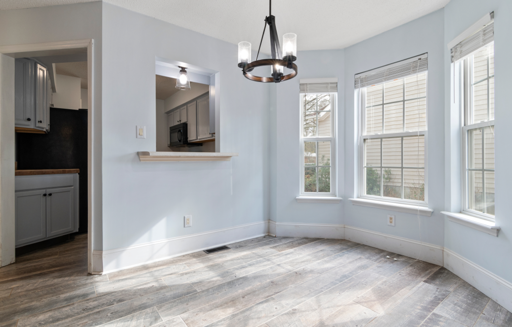

<section class="section_works">
    <div class="container">
        <div class="container_works">
            <h1 class="works__title">Наши работы</h1>
            <!-- Slider main container -->
            <div class="swiper2 works_swiper">
                <!-- Additional required wrapper -->
                <div class="swiper-wrapper works_swiper__wrapper">
                    <!-- Slides -->
                    <div class="swiper-slide wrapper__slider-works works_swiper__slider">
                        
                    </div>
                    <div class="swiper-slide wrapper__slider-works works_swiper__slider">
                        
                    </div>
                    <div class="swiper-slide wrapper__slider-works works_swiper__slider">
                        
                    </div>
                    <div class="swiper-slide wrapper__slider-works works_swiper__slider">
                        
                    </div>
                    <div class="swiper-slide wrapper__slider-works works_swiper__slider">
                        
                    </div>
                </div>
                <!-- If we need pagination -->
                <div class="swiper-pagination swiper-pagination-work"></div>

                <!-- If we need navigation buttons -->
                <div class="swiper__arrows-works">
                    <div class="prev__btn-works btn__prev">
                        
                    </div>
                    <div class="next__btn-works btn__next">
                        
                    </div>
                </div>
            </div>
        </div>
    </div>
</section>


<!-- Slider main container -->
<!-- <div class="swiper swiper2"> -->
<!-- Additional required wrapper -->
<!-- <div class="swiper-wrapper swiper-wrapper2"> -->
<!-- Slides -->
<!-- <div class="swiper-slide swiper-slide2">Slide 1</div> -->
<!-- <div class="swiper-slide swiper-slide2">Slide 2</div> -->
<!-- <div class="swiper-slide swiper-slide2">Slide 3</div> -->
<!-- ... -->
<!-- </div> -->
<!-- If we need pagination -->
<!-- <div class="swiper-pagination swiper-pagination2"></div> -->

<!-- If we need navigation buttons -->
<!-- <div class="swiper-button-prev"></div> -->
<!-- <div class="swiper-button-next"></div> -->

<!-- If we need scrollbar -->
<!-- <div class="swiper-scrollbar swiper-scrollbar2"></div> -->
<!-- </div> -->